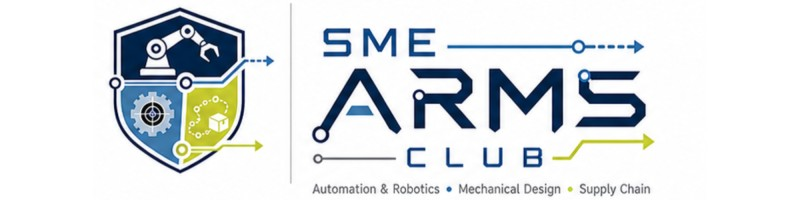

Make the club known.
Grow our presence inside and outside the campus, share student ideas, and make it easier for interested people to find us.
CAMPUS & COMMUNITY
CENTENNIAL COLLEGE / STUDENT-LED.
Turn what you’re learning into something you can show. Find your people, explore an idea, and build a portfolio with purpose.
Hold and drag to discover. Select an icon for its brief.
01 / ABOUT US
THREE DISCIPLINES. ONE SHARED AMBITION.We’re forming a student-led club at Centennial College for people who want to turn classroom knowledge into projects of their own.
Our purpose is to help students graduate with clearer direction and evidence of what they can do. By bringing Supply Chain Management, Automation and Robotics — Electromechanical Engineering Technology, and Mechanical Engineering Technology together, including their related program pathways, we want to make it easier to start, collaborate, and document meaningful work.
Our next steps are to make ARMS known inside and outside the campus, organize introductory logistics activities, and seek partnerships with clubs at other colleges for knowledge exchange and project competitions.
Bring a question, an unfinished idea, or the curiosity to learn. Your first project can begin there.
Build experience.
Discover your direction.
Show what you can do.
02 / FIND YOUR START
SMALL FIRST STEPS. REAL POSSIBILITIES.You don’t need a finished idea to get started. Explore these project concepts, find a challenge that interests you, and make it your own.
6 starting points to explore
Already have an idea? Bring it. A project can begin with a problem you’ve noticed, a sketch, or a question you can’t leave alone.
Start with your idea03 / BUILD WITH DIRECTION
YOUR PROCESS IS PART OF YOUR PORTFOLIO.A portfolio starts long before the final prototype. Record your decisions, test your ideas, and make your contribution easy to understand.
04 / OUR NEXT CHAPTER
THE CLUB WE’RE BUILDING.Our plans are about opening doors: to a first project, a new collaborator, and a wider community of people who build.
Grow our presence inside and outside the campus, share student ideas, and make it easier for interested people to find us.
CAMPUS & COMMUNITYPlan introductory logistics activities and approachable challenges that help students try a project, meet collaborators, and join the club.
INTRODUCTORY ACTIVITIESSeek collaborations with clubs at other colleges to exchange knowledge and develop shared challenges and competitions between projects.
FUTURE COLLABORATIONSBEFORE YOU START
A few questions you might have.
You can start with curiosity. These concepts are starting points, and your first step can be research, a simple model, or a sketch. Discuss the scope and support you need with the club before committing to a build.
Supply Chain Management, Automation and Robotics — Electromechanical Engineering Technology, and Mechanical Engineering Technology, including their related program variations. Different backgrounds can contribute to the same project, from planning operations to designing and controlling a mechanism.
Yes. Describe the problem you want to solve, the first version you could try, and where you would like help. You can prepare that introduction below.
Include the problem, your role, key decisions, sketches or models, test evidence, and what you learned. Clearly credit collaborators and explain your own contribution. A well-documented small project is a useful place to begin.
05 / TAKE THE FIRST STEP
You don’t have to know your whole career path. Start with one idea you’d like to explore.
YOUR INTRODUCTION TO THE CLUB
Write a short introduction, then email it to ARMS to ask how to join.